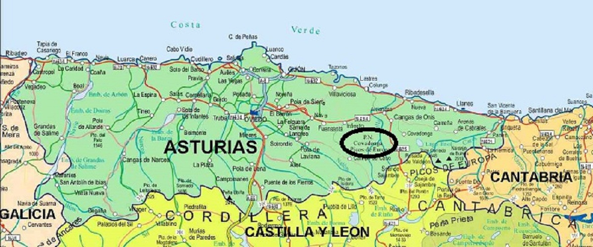

Lagos de Covadonga
El conjunto de los lagos de Covadonga (llamados Llagos de Cuadonga o Llagos d'Enol en asturiano) está formado por dos pequeños lagos, el Enol y el Ercina de origen glacial situados en la parte asturiana del Parque Nacional de los Picos de Europa, en el macizo occidental de dicha cadena montañosa. Existe un tercer lago, el Bricial, que sólo tiene agua durante el deshielo, pero también pertenece al conjunto. En Asturias son conocidos simplemente como los lagos.

Se situan en el concejo de Cangas de Onis y se accede a ellos a través de una carretera de 14 km que nace en el Real Sitio de Covadonga para llegar en primer lugar al lago Eno. Su frecuente uso de 1983 como final de etapa en la Vuelta ciclista a España ha popularizado internacionalmente el paraje.
La afluencia masiva de turistas, sobre todo aficionados al ciclismo, ha obligado a limitar el desarrollo de pruebas ciclistas en el entorno de Los Lagos. No obstante, la zona cuenta con una infraestructura turística.
La excesiva afluencia de visitas, en especial en temporada alta, también ha supuesto que el acceso en coche a los Lagos esté restringido, pudiendo acceder únicamente utilizando el transporte público habilitado para ello. Los vehículos particulares sólo pueden circular a primera hora de la mañana y a última de la tarde. En temporada baja, no hay restricciones de acceso con vehículo particular.
En las proximidades del Lago Ercina, en Buferrera, hasta 1979 se explotaron minas de hierro, manganeso y mercurio.
Menú Inicio Página


.png)